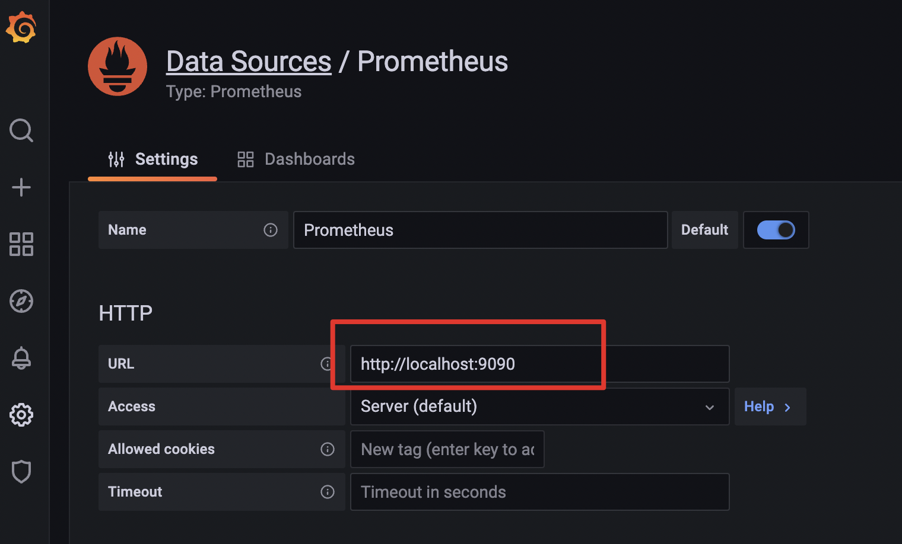

- 00 开篇词 Serverless是降本增效浪潮下的必然选择.md.html
- 00 思维构建 如何在新赛道下进阶Serverless能力？.md.html
- 01 生命周期：函数计算的基本流程是如何执行的？.md.html
- 02 触发器：如何构建事件源与函数计算的纽带？.md.html
- 03 高级属性：应对生产级别的应用，你需要掌握哪些技能？.md.html
- 04 冷启动：如何加快函数的第一次调用过程？.md.html
- 05 扩缩容：如何应对流量的波峰波谷？.md.html
- 06 流量转发：函数在不同情形下是如何执行的？.md.html
- 07 运行时（上）：不同语言形态下的函数在容器中是如何执行的？.md.html
- 08 运行时（下）：不同语言形态下的函数在容器中是如何执行的？.md.html
- 09 小试牛刀（一）：如何利用函数之间的调用解决业务问题？.md.html
- 10 小试牛刀（二）：如何突破VPC网络的速度限制？.md.html
- 11 WebIDE：如何让函数远离繁琐的本地开发模式？.md.html
- 12 编排：如何协调多任务的运行？.md.html
- 13 可观测（上）： 如何构建多维度视角下的Serverless监测体系？.md.html
- 14 可观测（下）： 如何构建多维度视角下的Serverless监测体系？.md.html
- 15 选型：不同阶段的数据应如何存储？.md.html
- 16 动手体验（一）：如何实现业务高效率地开发上线？.md.html
- 17 动手体验（二）：如何在云函数场景下实现一个有状态的服务？.md.html
- 18 实战指南：Serverless沙场老兵的一线使用经验.md.html
- 19 实战进阶（一）：Serverless “连接器” 的能力到底有多大？.md.html
- 20 实战进阶（二）：如何基于智能音箱开发一个BOT技能？.md.html
- 21 实战进阶（三）：传统的服务如何迁移到Serverless平台？.md.html
- 22 私有云：赛马时代的Serverless核心引擎谁能胜出？.md.html
- 23 实战进阶（四）：如何从0到1进阶一个开源引擎？.md.html
- 24 实战进阶（五）：如何从Serverless引擎蜕变成一个Serverless平台？.md.html
- 结束语 在实战中把握事物本质，不断革新.md.html
- 捐赠
13 可观测（上）： 如何构建多维度视角下的Serverless监测体系？
你好，我是静远。
今天我要跟你分享的主题是函数计算平台必备的另一个高级能力——可观测。
我们都知道，线上故障的快速定位几乎是所有开发人员都会面临的问题。在函数计算中，一个生产环境下的应用可以包括几十甚至上百个云函数，加上函数本身具有无状态、底层资源透明化等特点，这些都会增加用户排查问题的难度。
因此，可观测性对更加偏向业务的云服务平台来说，无疑是平台的另一双眼睛，能够帮助运维人员和开发者更快地排查故障，定位问题。
也许，你在进行函数开发的过程中，也遇到过这样的问题：
- 为什么我的函数响应时间突然变得那么长？
- 为什么我的函数突然访问不通了？
- 为什么我的函数一直返回4xx、5xx错误？
- 为什么我的函数一直超时？
- ……
带着这些问题，我将通过可观测的三大支柱，指标、日志和链路，从不同维度带你学习Serverless函数计算平台下可观测体系的构建。
希望通过这两节课，让你对函数计算在用户开发和平台运维过程中可能遇到的一系列问题和相应的解决方案有一定的了解，构建多维度的Serverless检测体系，助力业务更快、更稳地运行，而我们最开始的疑问，也都会一一得到解答。
Serverless下可观测的重要性
在Serverless的函数计算范畴内，除了函数开发，函数计算平台本身的运维工作也会暴露出各种问题。我把这些问题分为函数执行和平台运维两大类。
针对这两大类问题，我们往往不能根据函数返回的结果或者问题的表象立刻找到问题的症结，而是需要随着调用链路层层深挖。
可以说，资源的不可见让函数计算平台在用户视角下显得更像是一个“黑盒”，用户向“黑盒”发出请求后得到执行结果，但并不知道请求是如何调度到函数实例的，也不清楚代码究竟是如何运行的。图中像代码异常、执行超时、并发超限等等这一系列问题，最终只能通过“黑盒”的输出得到。
另一方面，函数计算平台涉及到调度、扩缩容、元信息管理等多个中控服务之间的交互，函数实例又离散分布在一个庞大的Kubernetes集群中，单节点故障时有发生，并且所依赖的下游服务也有不稳定的可能性，这样复杂的架构让线上问题的排查变得更加困难。
种种问题都表明了可观测性对于函数计算平台的重要性。那么，一个多维度的函数计算可观测体系应该如何构建呢？
我们可以参照云原生的可观测思路，提供监控度量、日志以及链路三种数据，再根据用户开发与平台运维的实际需求，构造一个多维度的可观测体系。
需要注意的是，构建可观测体系时，也要结合函数计算平台的特点，比如在用户侧，开发者更关心的是业务层面的处理流程，并不会像使用其他PaaS平台一样，关心请求在服务内部卡在了哪个环节。因此，用户侧的可观测数据应该尽量与调度层面的处理细节解耦。而在平台侧，我们又要考虑到复杂的集群环境以及多服务之间的关联。
整体解决方案
下面的思维导图总结了Serverless函数计算可观测体系建设的核心要点，结合函数计算在用户与平台下的两个视角，列出了我们在构建监测体系时需要考虑的关键点。我们通常需要通过可观测的三大数据支柱：指标（Metrics）、日志（Logs）、链路（Traces）来思考函数计算的不同场景。
接下来，我会根据整个大纲带你体验构建一个函数计算可观测体系的过程。
指标
在服务出现问题的时候，不管是用户还是运维最先关心的总是请求出错的整体情况，而了解整体概况最快的方法就是监控指标。
确定指标
要想通过监控指标观察服务的整体运行状态，我们面对的第一个问题，就是指标类型的设定。对于使用函数计算的用户而言，他们更关心的是业务逻辑，因此，常用的用户侧函数监控指标会包括以下几种：
- 函数的总执行次数；
- 函数的平均执行耗时；
- 关键错误类型的发生次数（超时、并发超限、5xx系统故障等）；
- 函数执行的资源使用情况；
- ……
而对于平台侧来说，我们往往更加关注的是函数计算的服务体系是否在正常工作以及涉及到的底层集群资源是否健康。因此，平台侧的系统监控通常会关注以下几个方面：
- 服务处理的总请求数量；
- 服务处理的失败请求数量；
- 单次扩缩容成功/失败的实例数量；
- 集群节点总数的整体变化趋势；
- 集群节点的资源使用情况；
- 服务节点的资源使用情况；
- ……
指标的收集与上报
在指标类型确定后，我们就可以收集、上报指标了。对于这部分流程，业内已经有很多不错的解决方案了。接下来，我将以Prometheus这款较为成熟的开源监控产品作为示例来讲解。关于Prometheus的安装过程，你可以参考官方手册进行搭建。
如果你对Prometheus有一定的了解，那应该也知道它的基本工作原理是不断地向Exporter（指标上报器）获取数据，而像CPU、Disk、Memory这类资源指标类型，可以利用Promethues官方提供的node-exporter进行采集。另外，对于集群和单节点的部署，也有了比较成熟的高可用解决方案。
我们这里主要还是聚焦于业务指标。以函数调用次数为例，我们利用Promethues提供的SDK模拟一个简单的上报指标，看看自定义的指标数据最终是如何展现到监控大盘上的。
package main
import (
"net/http"
"time"
"github.com/prometheus/client_golang/prometheus"
"github.com/prometheus/client_golang/prometheus/promhttp"
)
func main() {
// 构造一个名为function_x_invocation_times的自定义指标
// 模拟函数的调用次数
invocationTimes := prometheus.NewGaugeVec(
prometheus.GaugeOpts{
Name: "function_x_invocation_times",
Help: "count the function x of invocation times",
},
[]string{`functionName`},
)
// 将指标写入注册表中
registry := prometheus.NewRegistry()
registry.MustRegister(invocationTimes)
// 函数调用次数模拟器
mockFunction := func(functionName string) {
for {
invocationTimes.WithLabelValues(functionName).Set(float64(100 + rand.Intn(10)))
time.Sleep(time.Second * 2)
}
}
// 模拟两个函数的调用
go mockFunction("functionA")
go mockFunction("functionB")
//启动自定义的Exporter
http.Handle("/metrics", promhttp.HandlerFor(
registry,
promhttp.HandlerOpts{Registry: registry},
))
http.ListenAndServe(":8080", nil)
}
如上述的代码所示，我们构造一个名为function_x_invocation_times的自定义指标来模拟函数的调用次数，并将它写入Promethues的注册表中。然后，我们需要模拟一下函数的请求，通过启动两个协程模拟两次函数的调用，并启动一个自定义的Exproter供收集器采集。
在程序启动后，访问本地的http://localhost:8080/metrics 路径，就会看到上报的两个函数的调用次数了。
接下来，我们需要从metics接口获取数据，发送到Promethues，不过在启动收集器之前，还需要进行一些简单的配置。我们可以在prometheus.yml增加函数指标的Exporter。
scrape_configs:
- job_name: "serverless"
static_configs:
- targets: ["localhost:8080"]
完成配置之后，我们再执行二进制文件启动Prometheus，通过默认的http://localhost:9090 地址即可登录。进入主界面后，我们就可以查询到刚才上传的函数调用信息了。
监控数据被收集完成后，需要对其进行存储以便下游服务使用。这类具有时序关系的指标数据通常采用时序数据库TSDB进行存储。这类存储专门用来解决像监控指标这类产生频率快、种类繁多且强依赖于时间顺序的数据持久化的问题。
Prometheus其实已经内置了一个时序数据库，在一些数据量不大的场景下，是完全够用的，但如果你需要打造一个生产级别的可观测体系，我还是强烈建议你外接一个专门的时序数据库。
另外，在函数计算场景下，由于单个函数的实例可能遍布在集群的任意节点，这时如果仅靠DaemonSet方式部署的Exporter进行信息上报，其实效率并不高。因为Prometheus除了收集外，还需要汇聚来自不同节点上同一函数的指标，一旦请求激增，汇聚服务的压力就变得非常大。
考虑到需要让Prometheus的收集工作更加稳定，我们也可以在每次请求处理完后，将指标存入消息队列，并通过消费的方式提前汇总一轮指标。汇总完成后，再将指标上报给Prometheus进行二次汇聚。加上上面提到的持久化方案，一个轻量级的、函数计算下的监控体系架构就搭建好了，示意图如下。
你会发现，其中的Scheduler就是扩缩容课程中提到的流量调度模块。在请求的返回路径上，它会将函数指标上报到kafka，之后通过Function Exporter进行数据消费，并对不同节点产生的数据进行一次汇聚，完成之后，再交由Prometheus二次汇聚，最终再通过TSDB完成数据落盘。
可以看到，图中Prometheus不光需要从FunctionExporter获取指标，还可能从每个节点的Node-Exporter获取资源信息指标，这就是我前面提到的“指标数据一旦增多就会加大汇聚服务的压力”的原因。
最后，我还是要强调一下，在集群规模不大时，这的确是一个比较轻便的解决方案，但在集群节点数量比较多的情况下，我更建议你针对业务指标和资源指标分别配置Promethues。
另外，如果你是基于前面章节中提到的Knative来作为Serverless引擎，由于Knative内部采用的OpenCensus协议会暴露trace和metrics数据，采集也会更方便。你可以配置istio-ingressgateway、Knative Activator和queue-proxy来上传，对于用户容器实例，如果是java代码，还可以无侵入地通过Opentelemetry的Java客户端otel-javaagent来上报。
监控大盘的展示
完成了对函数指标的收集，我们又要如何对这些指标做可视化展示，清晰地看到数据的变化呢？接下来，我就利用Grafana采集的指标构造一个函数调用次数的监控大盘。
完成Grafana的安装后，我们首先需要配置Grafana的数据源。
在左侧菜单栏依次点击“Configuration->Data sources->Add data source”，接着，选择Prometheus作为配置的数据源，点击最下方的“Save & test”，当出现“Data source is working”的提示时，就表示已经能够正常连接到Prometheus了。

接着，我们再构造一个监控面板，在左侧菜单栏依次选择“Create->Dashboard->add panel->add a new panel”，进入新面板后，我们通过建立一个Query并输入“function_x_invocation_times{functionName=“functionA”}”，就可以将刚才上报的关于functionA函数的调用次数信息展示出来了。
按照刚才的方式，我们同样还可以看到functionB的调用次数。
到这里，我们就完成了一个简单的函数调用次数的指标监控。
相信你对这些函数计算业务指标从上报到收集再到展示的过程已经有了一个清晰的思路。像前面提到的执行时长、QPS、扩缩容数量等指标，在监控的实现上大同小异，你都可以尝试自己实现，也欢迎你在留言区和我互动讨论。
最后，我们再补充一个细节。如果出现线上问题，比如开发者的函数返回结果不符合预期，或者运维人员发现某个时间段的扩缩容数量始终为0时，我们也可以利用到可视化工具的时间段选择功能。选择时，最好先将时间粒度调大一些，比如我们先观察一天内或者一周内的整体情况，看看异常的大致时间拐点发生在哪一天，再根据时间拐点附近的时间段做细粒度的排查，这样可以有效提高我们的排障效率。
小结
通过本节内容的梳理，我们对FaaS形态Serverless可观测的重要性以及方案都有了一定的了解。
在Serverless的架构下，由于黑盒的调度和云组件集成的复杂性，可观测的构建要比传统微服务的架构难度更大。我们不仅要具备可观测的基础搭建思路，对Serverless产品本身也要非常熟悉。
我们还梳理了三大数据支柱之一，“指标”。首先，我们要确定指标的类型，熟悉常用的用户侧、平台侧函数监控指标有哪些。收集、汇聚指标的时候，也要注意汇聚的量级、存储形式、收集工具等要素；最后，收集到的指标也要利用起来，我们可以将采集到的指标做成监控大盘，最大化利用数据，为后续有可能出现的优化动作给出数据支撑。
好了，这节课我们就先到这里，下一节课，我再来跟你细聊三大数据支柱中日志和链路这两部分的内容。
思考题
想一想，日志和链路应该如何处理呢？是否可以归到一套架构上来实现信息的收集？
如果有时间，你可以先按照今天的示例自己操作演练一下指标的收集。
欢迎在留言区写下你的思考和答案，我们一起交流讨论。感谢你的阅读，也欢迎你把这节课分享给更多的朋友一起交流学习。
© 2019 - 2023 Liangliang Lee. Powered by gin and hexo-theme-book.